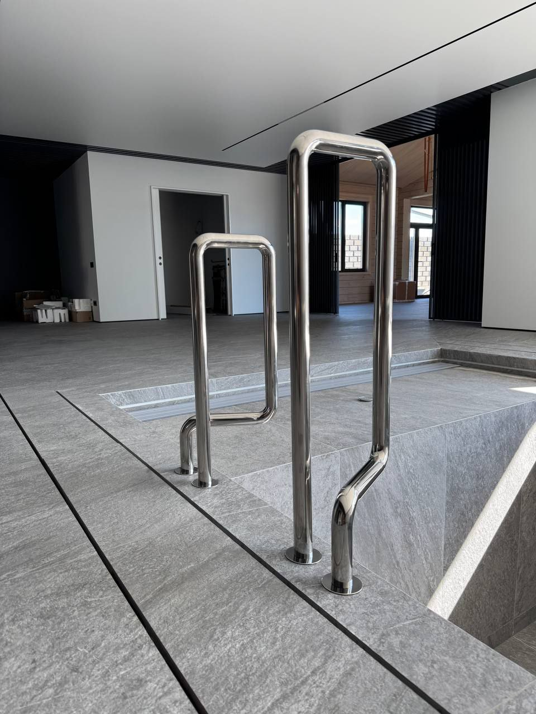

Введение
Консервация или зимняя эксплуатация: сначала выберите режим
Подготовка к зиме нужна бассейну, который сезонно отключают и оставляют без обычной циркуляции. Но не всякая зимовка означает полный останов: некоторые бассейны продолжают работать, а отдельные системы используют защиту от кратковременного заморозка.
До работ выясните, какой режим предусмотрен проектом, как устроены чаша и трубопроводы, какие элементы чувствительны к замерзанию и что предписывают руководства производителей. Эта статья посвящена сезонному закрытию; уход за работающим зимой бассейном разобран в отдельном материале.
Критерии
Четыре исходных вопроса перед закрытием бассейна
Режим на холодный сезон
Определите, будет ли бассейн полностью выведен из эксплуатации, переведён в частичный режим или продолжит работать. Эти сценарии требуют разных действий; защита автоматики от замерзания не равна полной консервации.
Конструкция чаши и уровень воды
Скиммерная и переливная схемы, тип чаши и расположение закладных влияют на допустимый уровень воды. Не опускайте его до форсунок или иной отметки по универсальному совету: проверьте проект и документацию конкретной чаши.
Оборудование и линии
Составьте список элементов, где может остаться вода: насос, фильтр, теплообменник, дозирующая станция, трубопроводы, арматура и закладные. Способ защиты и возможность слива определяются инструкциями установленных моделей.
Укрытие и условия площадки
Для укрытия проверьте его назначение, размеры, крепления и допустимые условия эксплуатации по паспорту. Не считайте любое зимнее полотно безопасным для хождения или рассчитанным на заданную снеговую нагрузку. Выбор конструкций укрытия подробно разбирается в статье о накрытиях.
Расчет
Получить расчет стоимости
Подготовим ориентир бюджета, состав работ и инженерные решения под ваш участок, дом и желаемый формат эксплуатации.

Инженерия
Почему универсальная схема зимовки ненадёжна
При сезонном отключении цель — не допустить, чтобы оставшаяся в чувствительном узле вода замёрзла и повредила его. Однако расположение сливных точек, конструкция фильтра и допустимые действия различаются. Не переносите давление продувки, положение арматуры или состав заглушек с другого бассейна; эти операции выполняют по проекту и руководствам оборудования.
Если бассейн оставляют работающим, защита от замерзания зависит от циркуляции, автоматики, электропитания и самой схемы. Руководство Pentair отдельно предупреждает, что функция freeze protection не гарантирует защиту оборудования при длительном холоде или недоступности управления. Для зимовки с отключением это не замена удаления воды из тех узлов, которые изготовитель требует осушить.
Перед закрытием оцените состояние воды и используйте только допустимую для вашей системы обработку по инструкции конкретного средства. Консервационный препарат не заменяет проверку параметров воды; сведения о контроле pH приведены в статье о балансе воды. Весной порядок очистки и запуска рассматривается отдельно в материале о подготовке бассейна после зимы.
Этапы
Контрольный порядок сезонного закрытия
- Выбрать режим. Зафиксировать сезонную остановку или работу в холодный период; не смешивать процедуры для этих сценариев.
- Сверить схему. Определить тип чаши, контуры, оборудование и узлы, для которых производитель задаёт отдельные действия.
- Подготовить воду и чашу. Удалить загрязнения и проверить параметры воды; реагенты применять по маркировке и инструкции для бассейна.
- Защитить оборудование. Сливать воду, продувать трубопроводы или оставлять циркуляцию только в соответствии с проектом и руководствами установленных компонентов.
- Установить укрытие и записать состояние. Проверить крепления по паспорту укрытия и отметить, какие линии осушены, какие устройства отключены, а какие оставлены в работе.
Рекомендации
Что не следует копировать из чужой инструкции
Одинаковое снижение воды, продувка всех труб одной настройкой, добавление универсальной дозы «зимней химии» и выбор укрытия только по фотографии могут не подходить конкретному бассейну. Сверяйте решение с чертежом, руководствами чаши и оборудования, этикеткой средства и проектными условиями.
До начала работ сохраните перечень оборудования, положения кранов по инструкции, выполненные операции и оставленные в работе системы. Это упростит контроль зимой и обратный ввод в эксплуатацию весной; регулярно обслуживаемый бассейн зимой — отдельный сценарий, описанный в материале об эксплуатации в холодный сезон.
Консультация
Заказать консультацию
Ответим на вопросы, оценим исходные данные и предложим следующий шаг: концепцию, выезд специалиста или предварительный расчет.